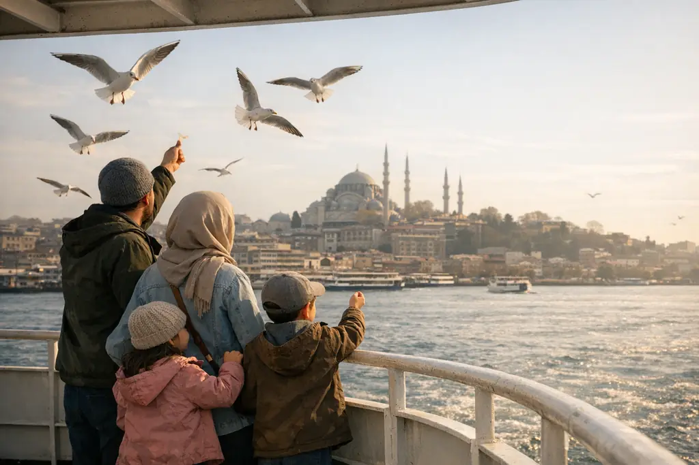

Roteiro de 10 dias na Turquia para famílias: Istambul, Bursa e Trabzon
Um roteiro familiar equilibrado de dez dias na Turquia, que une cidade, natureza e neve ou lagos, com ideias de atividades para crianças e dicas práticas de hospedagem e deslocamento com os pequenos.